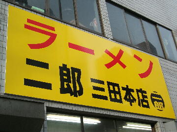
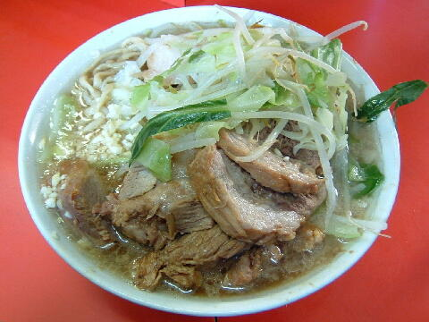

港区 三田 2-16-4
日・祝
8：30頃〜15：00頃 17：00頃〜20：00頃

ラーメン 600円、ぶたラーメン 700円、ぶたダブルラーメン 800円
大ラーメン 650円、ぶた入り大ラーメン 750円、ぶたダブル大ラーメン 850円
店員は、昼は創業者のおやじさん（総帥）と助手。夜はおやじさんの息子さん（Ｊｒ.）と助手。
ホワイトペッパー。
レンゲ、ティッシュ、名刺、全て無。
BGMは、昼はおやじさんのトーク。夜は息子さんのトーク。
トッピングは、ニンニク、ヤサイ、アブラ、カラメ。
おやじさんの気持ちを有難く頂こう。
「ラーメン二郎 三田」でヤフー検索
「ラーメン二郎 三田」でヤフーリアルタイム検索
「ラーメン二郎 三田」でグーグル検索

ぶたラーメン ニンニク
麺は、小麦の旨味を味わえる平打ちの極太麺。製麺する助手によって異なるようだ。
ぶたは、程良く醤油が染みた厚切りで大ぶりのぶた。肉の食感が良い。
スープは、豚の肉汁と脂の旨味が詰まったスープと、二郎専用しょうゆ（エフゼット）とのバランスが絶妙なもの。
ヤサイは、モヤシ6：キャベツ4の割合。今回はやや柔らか目の茹で上がり。
ニンニクは、中位の大きさに刻まれた生ニンニク。
本店はブレが大きいが、当れば神二郎の降臨となる。
ＰＣ店